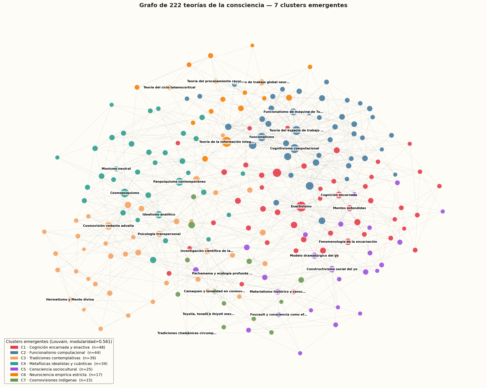

Cada nodo es una teoría. Las aristas representan influencias, herencias teóricas y diálogo crítico. Haz clic en un nodo para abrir su ficha.
Disciplinas
Clusters emergentes del grafo
Objetivo. Identificar las grandes familias o corrientes de pensamiento sobre la consciencia tal como emergen de la propia estructura de conexiones del catálogo, sin imponer una clasificación a priori por disciplina o por época. Es un análisis complementario al de los cinco scores: en lugar de medir, agrupa.
Metodología. Se aplica el algoritmo Louvain sobre el grafo no dirigido de las 222 teorías y sus 864 conexiones. Louvain busca la partición que maximiza la modularidad, una métrica que captura cuándo un agrupamiento es real (los nodos de un mismo grupo están más conectados entre sí de lo esperable por azar). Con resolución 1.0 emergen 7 clusters con modularidad 0.561 (>0.4 ya se considera una partición fuerte).
Los clusters tienen identidad temática muy clara y no son artefactos algorítmicos. Cada uno se caracteriza por su perfil disciplinar/temporal/geográfico, sus teorías más centrales (las más conectadas dentro del cluster) y sus teorías puente (las que conectan con los demás clusters mediante alta intermediación).
Visualización del grafo coloreado por cluster

Layout Kamada-Kawai · nodos dimensionados por grado · solo las 4 teorías más centrales por cluster están etiquetadas
Los 7 clusters
C1 — Cognición encarnada y enactiva
Disciplinas: Neurociencia (11) · Filosofía (9) · Ciencias cognitivas (8) · Biología (7)
Épocas: Segunda mitad siglo XX (19) · Siglo XXI (15) · Primera mitad siglo XX (9)
Regiones: Europa (29) · Norteamérica (12) · Latinoamérica (3)
Aristas hacia otros clusters: 94
El cluster más grande y más central del grafo. Reúne la herencia fenomenológica europea (Husserl → Merleau-Ponty → Varela) y la traduce en clave cognitiva contemporánea (cognición situada, mente extendida, enactivismo, procesamiento predictivo). Es el hub que articula filosofía continental, ciencia cognitiva experimental y biología de sistemas. Que el enactivismo tenga la betweenness más alta del grafo no es casualidad: esta tradición está literalmente diseñada para ser puente entre culturas epistémicas.
Teorías centrales (mayor grado dentro del cluster):
- Enactivismo — Francisco Varela, Evan Thompson, Eleanor Rosch grado interno 23 · externo 7
- Fenomenología de la encarnación — Maurice Merleau-Ponty grado interno 13 · externo 0
- Cognición encarnada — George Lakoff, Mark Johnson, Antonio Damasio (precursores) grado interno 12 · externo 2
- Mentes extendidas — Andy Clark, David Chalmers grado interno 10 · externo 1
- Procesamiento predictivo — Karl Friston, Andy Clark, Jakob Hohwy grado interno 10 · externo 11
- Cognición situada — Lucy Suchman, James Greeno grado interno 9 · externo 2
Teorías puente (alta proyección hacia otros clusters):
- Procesamiento predictivo — Karl Friston, Andy Clark, Jakob Hohwy betweenness 0.069 · proyecta a C2×5, C3×3, C5×1, C4×1, C6×1
- Enactivismo — Francisco Varela, Evan Thompson, Eleanor Rosch betweenness 0.118 · proyecta a C3×3, C2×2, C4×2
- Inteligencia colectiva y consciencia social — Pierre Lévy, Kevin Kelly, Douglas Engelbart betweenness 0.018 · proyecta a C7×2, C5×2, C2×1
C2 — Funcionalismo computacional y filosofía analítica
Disciplinas: Filosofía (19) · Computación/IA (15) · Neurociencia (4) · Ciencias cognitivas (3)
Épocas: Segunda mitad siglo XX (23) · Siglo XXI (14) · Primera mitad siglo XX (4)
Regiones: Norteamérica (28) · Europa (10) · Oceanía / aborigen (4)
Aristas hacia otros clusters: 87
El cluster atlántico-analítico por antonomasia. Articula la tradición anglosajona de filosofía de la mente (Putnam, Fodor, Block, Dennett, Chalmers) con el cognitivismo computacional y la inteligencia artificial. Su adherencia al eje Norteamérica + Segunda mitad del siglo XX refleja la historia real de su formación. Se separa del C1 por una diferencia profunda: aquí la mente es computación de representaciones, allí es acoplamiento encarnado con un mundo.
Teorías centrales (mayor grado dentro del cluster):
- Funcionalismo — Hilary Putnam, Jerry Fodor grado interno 17 · externo 4
- Teoría del espacio de trabajo global — Bernard Baars grado interno 16 · externo 8
- Cognitivismo computacional — George Miller, Jerome Bruner, Ulric Neisser, Herbert Simon grado interno 16 · externo 8
- Funcionalismo de máquina de Turing — Hilary Putnam (temprano), Ned Block grado interno 13 · externo 1
- Consciencia artificial y superinteligencia — Nick Bostrom, Stuart Russell, Ilya Sutskever grado interno 13 · externo 4
- Argumento del zombi filosófico — David Chalmers grado interno 10 · externo 0
Teorías puente (alta proyección hacia otros clusters):
- Cognitivismo computacional — George Miller, Jerome Bruner, Ulric Neisser, Herbert Simon betweenness 0.066 · proyecta a C1×5, C4×3
- Naturalismo biológico — John Searle betweenness 0.041 · proyecta a C6×4, C5×2, C1×1
- Teoría del centro narrativo de gravedad — Daniel Dennett betweenness 0.028 · proyecta a C5×6, C3×1, C7×1
C3 — Tradiciones contemplativas y ciencia de la meditación
Disciplinas: Espiritualidad (23) · Neurociencia (6) · Psicología (6) · Filosofía (2)
Épocas: Antigüedad (≤500 d.C.) (11) · Siglo XXI (9) · Medieval (500-1500) (7)
Regiones: Europa (12) · Norteamérica (9) · India / Sur de Asia (8)
Aristas hacia otros clusters: 70
Cluster de doble génesis temporal: fusiona tradiciones milenarias (vedanta, mística cristiana, hermetismo, budismo) con su reinterpretación científica contemporánea (meditación clínica, psicodélicos, psicología transpersonal). La distribución bimodal (Antigüedad + siglo XXI, casi nada en medio) refleja que no hay continuidad institucional sino un revival. Ken Wilber actúa como gran sintetizador. El cerebro entrópico y la ciencia de los psicodélicos son las bisagras hacia la neurociencia experimental.
Teorías centrales (mayor grado dentro del cluster):
- Cosmovisión vedanta advaita — Adi Shankara (sintetizador) grado interno 11 · externo 7
- Investigación científica de la meditación — Antoine Lutz, Richard Davidson, Wolf Singer grado interno 10 · externo 2
- Psicología transpersonal — Stanislav Grof, Charles Tart, Ken Wilber grado interno 9 · externo 4
- Hermetismo y Mente divina — Hermes Trismegisto (atribuido), Ficino grado interno 8 · externo 0
- Mística cristiana — Meister Eckhart, Teresa de Ávila, Juan de la Cruz grado interno 8 · externo 2
- Modelo integral de Wilber — Ken Wilber grado interno 8 · externo 4
Teorías puente (alta proyección hacia otros clusters):
- Anātman budista — Buda Śākyamuni, Nāgārjuna, Vasubandhu betweenness 0.025 · proyecta a C2×3, C1×2, C4×2
- Cosmovisión vedanta advaita — Adi Shankara (sintetizador) betweenness 0.037 · proyecta a C4×6, C1×1
- Cerebro entrópico — Robin Carhart-Harris betweenness 0.034 · proyecta a C6×3, C1×2
C4 — Metafísicas idealistas, cuánticas y panpsíquicas
Disciplinas: Filosofía (13) · Física (11) · Psicología (3) · Espiritualidad (2)
Épocas: Segunda mitad siglo XX (10) · Siglo XXI (8) · Primera mitad siglo XX (8)
Regiones: Europa (16) · Norteamérica (14) · India / Sur de Asia (2)
Aristas hacia otros clusters: 78
El cluster donde la consciencia es cósmica o fundamental. Agrupa las propuestas que rechazan el emergentismo fisicalista: panpsiquismo (Strawson, Goff, Seager), cosmopsiquismo, idealismo analítico (Kastrup), monismo neutral (Russell, Mach), y, llamativamente, una nutrida representación de interpretaciones de la mecánica cuántica que dan lugar a la observación consciente (Wigner, Bohm, QBism, holográfico). La conexión fuerte con C3 no es casual: comparten el rechazo al materialismo reduccionista.
Teorías centrales (mayor grado dentro del cluster):
- Cosmopsiquismo — Philip Goff, Yujin Nagasawa, Itay Shani grado interno 16 · externo 6
- Panpsiquismo contemporáneo — Galen Strawson, Philip Goff, William Seager grado interno 12 · externo 7
- Idealismo analítico — Bernardo Kastrup grado interno 10 · externo 6
- Monismo neutral — Bertrand Russell, William James, Ernst Mach grado interno 8 · externo 0
- Interpretación de Copenhague (Wigner) — Eugene Wigner, John von Neumann grado interno 8 · externo 0
- Teoría holográfica del universo — David Bohm, Karl Pribram, Leonard Susskind grado interno 8 · externo 0
Teorías puente (alta proyección hacia otros clusters):
- Pragmatismo y consciencia stream — William James betweenness 0.037 · proyecta a C2×2, C3×2, C1×1
- Panpsiquismo contemporáneo — Galen Strawson, Philip Goff, William Seager betweenness 0.051 · proyecta a C1×4, C2×1, C6×1, C3×1
- Psicología analítica junguiana — Carl Gustav Jung betweenness 0.026 · proyecta a C3×5, C5×2
C5 — Consciencia como construcción sociocultural
Disciplinas: Sociología (11) · Psicología (5) · Filosofía (4) · Neurociencia (3)
Épocas: Segunda mitad siglo XX (13) · Primera mitad siglo XX (6) · Siglo XIX (3)
Regiones: Europa (15) · Norteamérica (9) · Asia oriental (1)
Aristas hacia otros clusters: 51
Las teorías que dicen que la consciencia es un efecto social, no una propiedad individual. Marx, Durkheim, Mead, Goffman, Foucault, Adorno, los estudios culturales — el giro sociológico. La presencia sorprendente de la hipótesis bicameral de Jaynes tiene sentido aquí: también trata la consciencia como producto histórico, aunque desde un ángulo psicocultural. El psicoanálisis freudiano es la bisagra más conectada hacia otros territorios.
Teorías centrales (mayor grado dentro del cluster):
- Materialismo histórico y consciencia — Karl Marx, Friedrich Engels grado interno 9 · externo 0
- Constructivismo social del yo — Kenneth Gergen, John Shotter grado interno 9 · externo 3
- Modelo dramatúrgico del yo — Erving Goffman grado interno 8 · externo 3
- Foucault y consciencia como efecto de poder — Michel Foucault grado interno 7 · externo 0
- Hipótesis del cerebro bicameral — Julian Jaynes grado interno 6 · externo 0
- Escuela de Frankfurt y crítica de la razón instrumental — Horkheimer, Adorno, Marcuse grado interno 6 · externo 0
Teorías puente (alta proyección hacia otros clusters):
- Idealismo absoluto — Georg Wilhelm Friedrich Hegel betweenness 0.031 · proyecta a C4×2, C3×2, C1×1
- Psicoanálisis freudiano — Sigmund Freud betweenness 0.021 · proyecta a C4×2, C2×1, C1×1, C7×1
- Consciencia colectiva de Durkheim — Émile Durkheim betweenness 0.017 · proyecta a C2×1, C1×1, C7×1
C6 — Neurociencia empírica estricta
Disciplinas: Neurociencia (15) · Biología (1) · Filosofía (1)
Épocas: Siglo XXI (9) · Segunda mitad siglo XX (8)
Regiones: Norteamérica (10) · Europa (6) · Latinoamérica (1)
Aristas hacia otros clusters: 49
El cluster más disciplinarmente puro del catálogo (15 de 17 son neurociencia). Son las teorías empíricas concretas sobre el cómo neural de la consciencia: oscilaciones gamma, vinculación talamocortical, procesamiento recurrente, NCC, IIT, GWT neuronal. La IIT actúa como embajador hacia afuera: conecta con la filosofía de la mente (C2), el panpsiquismo (C4 — por la tesis fuerte de Tononi) y el 4E (C1). Es un cluster pequeño pero teóricamente muy denso.
Teorías centrales (mayor grado dentro del cluster):
- Espacio de trabajo global neuronal (GNW) — Stanislas Dehaene, Jean-Pierre Changeux, Lionel Naccache grado interno 8 · externo 2
- Teoría de la información integrada — Giulio Tononi, Christof Koch grado interno 8 · externo 22
- Teoría del procesamiento recurrente — Victor Lamme grado interno 7 · externo 0
- Teoría del ciclo talamocortical — Rodolfo Llinás grado interno 7 · externo 0
- Vinculación por sincronía — Wolf Singer, Andreas Engel grado interno 7 · externo 0
- Correlatos neurales de la consciencia — Francis Crick, Christof Koch grado interno 6 · externo 3
Teorías puente (alta proyección hacia otros clusters):
- Teoría de la información integrada — Giulio Tononi, Christof Koch betweenness 0.105 · proyecta a C2×9, C4×7, C1×4, C3×2
- Sistemas complejos y emergencia — Stuart Kauffman, Murray Gell-Mann betweenness 0.017 · proyecta a C2×1, C1×1, C7×1, C3×1, C4×1
- Correlatos neurales de la consciencia — Francis Crick, Christof Koch betweenness 0.016 · proyecta a C2×2, C3×1
C7 — Cosmovisiones indígenas y animistas
Disciplinas: Tradición indígena (8) · Psicología (3) · Biología (1) · Teología (1)
Épocas: Segunda mitad siglo XX (4) · Antigüedad (≤500 d.C.) (4) · Medieval (500-1500) (3)
Regiones: Europa (4) · Latinoamérica (4) · Norteamérica (2)
Aristas hacia otros clusters: 33
El cluster más aislado del corpus, con solo 33 aristas externas — menos que cualquier otro. Es coherente con su carácter: las cosmovisiones indígenas están documentadas principalmente en su contexto cultural, con pocas influencias bidireccionales hacia el pensamiento académico occidental. Gaia juega un papel singular: es una teoría occidental que por razones históricas (ecocentrismo, autoregulación planetaria) conecta naturalmente con Pachamama y las cosmologías animistas. Ubuntu introduce además una dimensión fuera del eje indo-precolombino.
Teorías centrales (mayor grado dentro del cluster):
- Camaquen y tonalidad en cosmovisión andina — Tradición quechua y aimara grado interno 8 · externo 0
- Pachamama y ecología profunda indígena — Cosmovisión andina contemporánea, Sumak Kawsay grado interno 6 · externo 0
- Teyolía, tonalli e ihíyotl mexicas — Sahagún (cronista), tradición náhuatl grado interno 5 · externo 0
- Tradiciones chamánicas circumpolares — Tradición tungusa, inuit, sami, tuvana grado interno 5 · externo 0
- Maori y whakapapa — Mason Durie, tradición maorí grado interno 5 · externo 0
- Trance ritual y posesión — Gilbert Rouget, antropología comparada grado interno 5 · externo 0
Teorías puente (alta proyección hacia otros clusters):
- Hipótesis de Gaia — James Lovelock, Lynn Margulis betweenness 0.035 · proyecta a C4×3, C1×3, C3×2, C6×1
- Disociación y consciencia múltiple — Pierre Janet, Frank Putnam betweenness 0.022 · proyecta a C5×3, C4×1, C2×1
- Ubuntu y persona-en-comunidad — John Mbiti, Desmond Tutu betweenness 0.019 · proyecta a C5×3, C1×1, C4×1
Mapa de conexiones entre clusters
Los pares de clusters más conectados entre sí (más aristas en común):
- C1 ↔ C2: 28 aristas — Cognición encarnada y enactiva ↔ Funcionalismo computacional y filosofía analítica
- C3 ↔ C4: 28 aristas — Tradiciones contemplativas y ciencia de la meditación ↔ Metafísicas idealistas, cuánticas y panpsíquicas
- C2 ↔ C6: 23 aristas — Funcionalismo computacional y filosofía analítica ↔ Neurociencia empírica estricta
- C1 ↔ C3: 20 aristas — Cognición encarnada y enactiva ↔ Tradiciones contemplativas y ciencia de la meditación
- C1 ↔ C5: 18 aristas — Cognición encarnada y enactiva ↔ Consciencia como construcción sociocultural
- C2 ↔ C5: 15 aristas — Funcionalismo computacional y filosofía analítica ↔ Consciencia como construcción sociocultural
- C1 ↔ C4: 13 aristas — Cognición encarnada y enactiva ↔ Metafísicas idealistas, cuánticas y panpsíquicas
- C2 ↔ C4: 13 aristas — Funcionalismo computacional y filosofía analítica ↔ Metafísicas idealistas, cuánticas y panpsíquicas
El eje C1 ↔ C2 (4E vs Funcionalismo) es el gran eje de oposición/diálogo del debate cognitivo contemporáneo. El eje C3 ↔ C4 (Contemplativo vs Metafísica idealista) muestra que las propuestas alternativas al fisicalismo convergen entre sí. C7 (indígenas) es el cluster más periférico del corpus, con menos aristas externas que cualquier otro.
Hallazgos principales
- El 4E cognition (C1) es el verdadero centro estructural del grafo, no la neurociencia empírica. Tiene la mayor betweenness y conecta con los siete clusters.
- Tres teorías son embajadoras totales (centrales en su cluster + puentes + top del Score Sintético): Enactivismo (C1), Teoría de la información integrada (C6) y Cognitivismo computacional (C2). Si quisiéramos reducir el catálogo a tres referencias, estas permitirían abrir cualquier conversación.
- Las tradiciones contemplativas (C3) y las metafísicas idealistas (C4) se legitiman mutuamente: comparten el rechazo al fisicalismo y por eso aparecen como el segundo gran eje del grafo.
- El cluster sociocultural (C5) es invisible al Score Sintético: ninguna de sus teorías entra al top 20 del SS. Su relevancia es densa intra-cluster pero no proyecta hacia el resto del corpus.
- Las cosmovisiones indígenas (C7) siguen siendo un territorio relativamente cerrado en la bibliografía académica del corpus. Una observación descriptiva, no normativa.
Las 5 teorías vertebradoras del corpus
Cruzando el Score Sintético con el análisis de clusters emergentes, emerge una "biblioteca mínima" de cinco teorías que cubren prácticamente todo el catálogo. Cada una es óptima desde dos criterios independientes que convergen en el mismo nombre: son a la vez localmente representativas (centrales en su cluster) y globalmente proyectivas (relevantes en múltiples scores).
Las 5 teorías vertebradoras
| # | Teoría | Cluster que abre | Por qué central en cluster | Por qué relevante en score |
|---|---|---|---|---|
| 1 | Enactivismo Varela, Thompson, Rosch |
C1 · 4E cognition | #1 central del cluster + betweenness máxima del grafo (0,118) | #1 SS = 0,989, percentiles ≥ 0,83 en las 5 dimensiones |
| 2 | Teoría de la información integrada Tononi, Koch |
C6 · Neurociencia empírica | #2 central + betweenness 0,105, único embajador externo de la neurociencia | #5 SS = 0,965, top 1 en SI, top 2 en SC y SDU |
| 3 | Cognitivismo computacional Miller, Bruner, Simon, Neisser |
C2 · Funcionalismo computacional | #3 central + puente a C1 y C4 | #4 SS = 0,968, top en SI y STD, sólido en todo |
| 4 | Cosmovisión vedanta advaita Adi Shankara |
C3 · Tradiciones contemplativas | #1 central por mucho margen + único nodo que abre el cluster con masa crítica | #2 SS = 0,974, top 1 en SPH y SDU |
| 5 | Constructivismo social del yo Mead, Cooley, Gergen |
C5 · Consciencia sociocultural | Empatado en lo más central + único nodo de C5 con proyección externa | #43 SS = 0,831 (mejor de su cluster por mucho; el resto cae al puesto 91-218) |
Las cuatro primeras son embajadoras "naturales": dominan su cluster Y aparecen en el top 5 del Score Sintético. Constructivismo social del yo es la excepción — su cluster (C5) es estructuralmente endógeno, así que ningún miembro suyo entra al SS top 20. Pero entre los nodos de C5, Constructivismo es el menos endogámico: el único con percentiles altos en STD (0,98), SDU (0,72) y SPH (0,69).
Cobertura del grafo
Las 5 teorías, mediante caminos cortos en el grafo de conexiones, alcanzan:
| Distancia | Cobertura |
|---|---|
| 1 paso (vecinas directas) | 108 / 222 = 48,6% |
| 2 pasos (vecinas y vecinas de vecinas) | 214 / 222 = 96,4% |
El segundo salto duplica la cobertura: refleja que el catálogo tiene una topología small-world en la que cada teoría central enlaza a 20-30 vecinas directas, pero a través de ellas se accede a casi la totalidad del corpus en un salto adicional.
Cobertura por cluster
| Cluster | Tamaño | 1 paso | 2 pasos |
|---|---|---|---|
| C1 4E cognition | 48 | 60,4% | 100% |
| C2 Funcionalismo computacional | 44 | 56,8% | 100% |
| C3 Tradiciones contemplativas | 39 | 43,6% | 97,4% |
| C4 Metafísica idealista/cuántica | 34 | 50,0% | 100% |
| C5 Consciencia sociocultural | 25 | 40,0% | 96,0% |
| C6 Neurociencia empírica | 17 | 52,9% | 100% |
| C7 Cosmovisiones indígenas | 15 | 6,7% | 60,0% |
En 2 pasos cuatro clusters quedan totalmente cubiertos (C1, C2, C4 y C6 = 143 teorías = 64% del catálogo). C3 y C5 se cubren al 96-97% gracias a Vedanta y Constructivismo. C7 (cosmovisiones indígenas) llega al 60% como bonus residual: la Hipótesis de Gaia y otras teorías biológico-ecológicas le hacen de bisagra desde las otras embajadoras. Solo 8 teorías de las 222 quedan completamente fuera de alcance — y la mayoría son cosmovisiones indígenas culturalmente disjuntas del eje occidental-académico.
Por qué esta es la mejor combinación de teorías
- Mínima: 5 teorías cubren el 96,4% del catálogo en 2 pasos.
- Equilibrada disciplinariamente: una por cluster en los cinco clusters mayores del corpus académico (C1, C2, C3, C4 y C5).
- Equilibrada temporalmente: una de la antigüedad (Vedanta, s. VIII), una del s. XIX-XX (Constructivismo), tres del s. XX-XXI (Enactivismo, IIT, Cognitivismo).
- Equilibrada geográficamente: 2 de Norteamérica (IIT, Cognitivismo), 1 transatlántica (Enactivismo, USA-Chile), 1 de la India (Vedanta), 1 europea-norteamericana (Constructivismo).
- Robusta a múltiples criterios: surgen del cruce de tres análisis independientes (clusters por estructura del grafo, Score Sintético por perfil multi-dimensional, cobertura óptima por alcance en 2 pasos). La convergencia de los tres da confianza estadística.
CONCLUSIÓN
Estas 5 teorías constituyen una "biblioteca mínima" muy equilibrada del pensamiento sobre la consciencia: tres teorías del debate cognitivo-neurocientífico contemporáneo, una tradición milenaria que abre el universo contemplativo, y una teoría de las ciencias sociales que abre el universo construccionista. Estos cinco nombres permiten abrir prácticamente cualquier debate del catálogo.
Objetivo de la propuesta
Esta sección desarrolla dos alternativas de teoría unificada de la consciencia que toman como punto de partida las cinco teorías vertebradoras identificadas en la sección Conclusiones: Vedanta advaita, Teoría de la información integrada (IIT), Enactivismo, Cognitivismo computacional y Constructivismo social del yo.
El propósito no es elegir una teoría como la verdadera ni catalogar todas las propuestas integradoras existentes. Es intentar una integración real de las cinco visiones, viéndolas como complementarias — planteamientos parciales desde diferentes perspectivas — y no como rivales que se anulan mutuamente. Para que la integración sea efectiva y no meramente yuxtapuesta, se adopta un modelo jerárquico: una de las cinco teorías ocupa la posición fundacional ontológica, y las otras se articulan sobre ella como descripciones de niveles sucesivos del fenómeno.
Por qué dos alternativas y no una
El compromiso jerárquico exige decidir qué nivel se asume como fundamento. Aquí las cinco teorías vertebradoras se reparten en dos posiciones ontológicas opuestas:
- Posición idealista: la consciencia es ontológicamente primaria; lo material aparece dentro de ella. Esta es la posición clásica del Vedanta advaita.
- Posición materialista-emergentista: la materia es ontológicamente primaria; la consciencia emerge de ciertas configuraciones físicas. Esta es la posición típica de la Teoría de la información integrada en su lectura naturalista.
Ambas posiciones permiten construir una arquitectura jerárquica coherente con las otras tres teorías, pero conducen a modelos opuestos: en uno el flujo va de la consciencia universal hacia su modulación individual; en el otro, de la materia con información integrada hacia el reconocimiento fenomenológico del fondo. Ningún criterio empírico permite hoy decidir entre las dos posiciones, pero sí es posible mostrar que cada una articula coherentemente a las cinco teorías sin reducirlas trivialmente unas a otras.
Estructura de cada propuesta
Cada una de las dos alternativas se desarrolla con la misma estructura para facilitar la comparación:
- Tesis central: la posición ontológica que se asume.
- Nivel fundacional: descripción detallada de la teoría que ocupa la base.
- Niveles intermedios: cómo se articulan las otras tres teorías mayores (IIT/Vedanta y las dos restantes — enactivismo y cognitivismo) sobre el fundamento.
- Constructivismo: aparece en ambas como añadido último, modulando socialmente el yo.
- Esquema gráfico: el orden jerárquico de los niveles.
- Formulación sintética: una frase que recoge todo el modelo.
Las dos propuestas se desarrollan en las dos subpestañas siguientes. Se presentan como alternativas; el lector puede elegir cuál le resulta más convincente según sus propias intuiciones de fondo.
Alternativa A — Modelo idealista: Vedanta como fundamento
Tesis central
Existe una consciencia universal, sin partes y sin fronteras, que es el sustrato ontológico último de todo lo real. Esa consciencia no es una propiedad emergente del cerebro humano: es lo primero. Lo que llamamos "consciencia individual" en un ser humano no es algo distinto de la consciencia universal sino una modulación local suya, restringida por la estructura física de un organismo concreto.
Las otras cuatro teorías vertebradoras describen, en términos científicos contemporáneos, cómo la consciencia universal se actualiza y se expresa en un ser humano singular. La IIT describe la estructura física de la modulación, el enactivismo el modo de relación con el mundo, el cognitivismo la forma del procesamiento, y el constructivismo cómo lo social lo marca.
Nivel fundacional — Vedanta advaita: la consciencia como sustrato
Antes que cualquier cuerpo, cualquier cerebro o cualquier mundo material, hay un único campo de aparición sin sujeto ni objeto, sin tiempo ni espacio: lo que el advaita llama Brahman y reconoce como idéntico al Atman (el sí-mismo profundo). Ese campo no es una sustancia ni una entidad ni un dios personal: es la pura conciencia-fondo, la condición de posibilidad de cualquier cosa que pueda ser experimentada o pensada.
La realidad material no es una realidad independiente que luego "produce" consciencia: es una modulación estructurada de esa consciencia única, una serie de patrones que aparecen en ella. Lo que el sentido común llama "objetos" o "cuerpos" son configuraciones estables y reconocibles del campo. La separación entre sujeto y objeto es real para la experiencia ordinaria pero ontológicamente derivada — emerge dentro del campo, no lo constituye.
Nivel de individuación — del campo único al sujeto humano
¿Cómo, a partir de un único campo de consciencia, surgen sujetos individuales finitos? El advaita responde con el concepto de maya: la apariencia, el juego de ocultamiento por el cual el uno se vive como muchos. El ser humano singular es una "ventana" estructurada de la consciencia universal: una región del campo cuya organización física-biológica produce un punto de vista localizado, finito y temporal. Las otras tres teorías vertebradoras describen esa estructuración.
Aspecto estructural — la IIT: arquitectura de información integrada
Lo que hace que un cerebro humano sea una "ventana" rica de la consciencia universal y una piedra no, no es que el cerebro produzca consciencia (la consciencia ya estaba ahí), sino que ofrece la arquitectura física más apta para condensarla en un punto de vista coherente. Esa arquitectura es lo que la IIT formaliza: un sistema cuya información integrada (Φ) sea irreducible — es decir, un sistema cuyo estado actual no se pueda descomponer en estados de partes independientes sin perder estructura.
Visto desde la base vedanta, Φ no mide cuánta consciencia hay; mide cuán articulada y rica es la modulación local del campo único en ese sistema. Un cerebro humano tiene Φ alto; por eso es capaz de manifestar la consciencia universal con resolución elevada, contenidos diferenciados, integración temporal. Una piedra tiene Φ casi nulo; el campo único pasa por ella sin condensarse en un punto de vista. La IIT proporciona así el principio físico de individuación.
Aspecto relacional — el enactivismo: proyección hacia el mundo
Una vez que existe una ventana estructurada, esa ventana no contempla el mundo desde fuera: lo enacta. La consciencia individual no recibe pasivamente representaciones del exterior; es activa, móvil, encarnada. Se acopla a través de los sentidos y la acción, dibujando un mundo significativo en su propia forma de ser.
Visto desde la base vedanta, el enactivismo describe cómo el sujeto individuado proyecta el campo universal hacia un afuera que solo existe como tal porque el sujeto se ha individuado. El "mundo" del enactivismo no es Brahman entero (que no tiene afuera): es la región del campo que aparece como mundo desde el punto de vista del sujeto. La encarnación, el acoplamiento sensoriomotor y la acción son los modos en que la modulación local interactúa con el resto del campo.
Aspecto operacional — el cognitivismo: procesamiento de información
Sobre la arquitectura estructural y el acoplamiento enactivo opera además una capa de procesamiento de información concreto: percepciones, recuerdos, inferencias, decisiones, planes. El cognitivismo describe esta capa como manipulación de representaciones bajo reglas. Es la maquinaria operativa que el sujeto utiliza para navegar el mundo que enacta.
Visto desde la base vedanta, las "representaciones" son patrones de modulación dentro del campo: configuraciones del campo que el sujeto puede manipular y combinar, no entidades inmateriales ni "información objetiva". El cognitivismo acierta en su descripción funcional, sin necesidad de la metafísica representacional clásica si se acepta el monismo de fondo.
Adición menor — el constructivismo
En seres sociales como el humano, sobre los tres aspectos anteriores hay una capa adicional de modelado social del yo. El "yo" autobiográfico, el sujeto que dice "yo" y se reconoce en una historia, se construye en buena medida en la interacción con otros: por internalización de miradas, narrativas, roles y categorías culturales.
Visto desde la base vedanta, esta capa es superficial pero no irrelevante. Superficial porque no toca el fondo (Atman/Brahman): el yo socialmente construido es un patrón en la consciencia, no la consciencia. No irrelevante porque condiciona la forma en que la consciencia humana se vive a sí misma, sufre o se libera. La gran tradición meditativa coincide con esta lectura: el yo construido es real como construcción, y disolverlo es parte del camino hacia el reconocimiento del fondo.
Esquema gráfico
BRAHMAN (consciencia universal, sin partes)
│
[ maya / individuación ]
│
▼
┌─────────────────────────────────┐
│ consciencia individuada │
│ en el ser humano │
└────┬───────────┬───────────┬─────┘
│ │ │
▼ ▼ ▼
IIT Enactivismo Cognitivismo
(estructura (proyección (procesamiento
de Φ alto que hacia el de información
individúa el mundo, en en la modulación
campo) acoplamiento individuada)
encarnado)
│
▼
Constructivismo
(modulación social del
yo narrativo, capa
añadida superficial)
Formulación sintética en una frase
La consciencia es un campo único de aparición (Vedanta) que se individúa en cuerpos humanos mediante arquitecturas físicas de alta información integrada (IIT), las cuales proyectan activamente un mundo a través del acoplamiento sensoriomotor (Enactivismo) y operan internamente mediante procesamiento de representaciones (Cognitivismo), modeladas además socialmente en el "yo" narrativo (Constructivismo).
Alternativa B — Modelo materialista-emergentista: IIT como fundamento
Tesis central
Lo primero, ontológicamente, es la materia y sus configuraciones físico-informacionales. La consciencia no es un dato inicial: emerge cuando la materia se organiza de cierto modo. Lo que las tradiciones contemplativas describen como "consciencia universal" no es una entidad metafísica primaria sino el estado experiencial límite al que llega un sistema consciente cuando se desarrolla, se complejiza y entrena su capacidad de auto-observación.
Las otras cuatro teorías vertebradoras describen, en orden creciente de complejidad, cómo se construye la experiencia consciente sobre el sustrato físico-informacional: primero como sistema vivo encarnado, luego como sistema cognitivo, luego como sujeto socialmente constituido, y finalmente como acceso fenomenológico al fondo de aparición.
Nivel fundacional — IIT: la materia con información integrada
Antes de cualquier consciencia hay materia organizada según ciertas leyes físicas. La pregunta clave es: ¿qué clase de configuración material genera experiencia? La IIT ofrece una respuesta matemáticamente precisa: aquella cuya información integrada (Φ) sea irreducible. Un sistema con Φ alto es un sistema cuyo estado actual no puede descomponerse en estados de partes independientes sin perder información. Esa irreducibilidad estructural es la condición para que haya un punto de vista.
La consciencia es entonces una propiedad emergente de cierto tipo de organización física-informacional. No flota sobre la materia ni precede a la materia: surge de la materia cuando ésta alcanza la organización adecuada. El postulado fundacional es naturalista: todo lo que llamamos consciencia, en cualquier nivel, es resultado de cómo se ordenan los procesos físicos.
Nivel de actualización biológica — el enactivismo: vida y mundo
La materia con Φ alto, en la naturaleza, se da paradigmáticamente en organismos vivos. No basta con tener una arquitectura abstracta; hace falta un cuerpo vivo acoplado a un entorno para que la experiencia tenga contenido. El enactivismo describe este nivel: la cognición no es representación pasiva sino enacción — el organismo trae forth un mundo significativo a través de su acoplamiento sensoriomotor con el entorno.
Visto desde la base IIT, el enactivismo añade el factor evolutivo y biológico: la consciencia que la IIT permite estructuralmente se actualiza concretamente en sistemas vivos cuya arquitectura cerebral se ha moldeado por la presión selectiva del acoplamiento con un mundo. La encarnación no es un añadido decorativo: es el modo histórico-evolutivo en el que la materia con Φ alto adquiere contenido experiencial específico.
Nivel funcional — el cognitivismo: procesamiento de información
Sobre el sistema vivo enactivamente acoplado emergen funciones cognitivas concretas: percepción, atención, memoria, inferencia, razonamiento, decisión, planificación. Estas funciones se dejan describir bien con el lenguaje del procesamiento de información: representaciones, computaciones, reglas. El cognitivismo es la descripción funcional de lo que un cerebro hace.
Visto desde la base IIT, el cognitivismo no compite con ella: opera en una escala distinta. La IIT describe el sustrato estructural que hace posible la consciencia; el cognitivismo describe las operaciones funcionales que ocurren sobre ese sustrato. Ambos son compatibles si se acepta que la cognición funcional ocurre en sistemas que cumplen la condición de Φ alto.
Nivel social — el constructivismo: la construcción del yo
En seres sociales como el humano, sobre la maquinaria cognitiva emerge un "yo" narrativo que se constituye en la interacción intersubjetiva. Aprendemos a decir "yo" mirándonos en los otros, internalizando sus miradas, narrando nuestra historia con palabras y categorías que vienen de nuestra cultura. El sujeto autobiográfico no es una propiedad intrínseca del cerebro: es un patrón emergente que requiere lenguaje, cultura y sociedad.
Visto desde la base IIT, el constructivismo añade un nivel que las capas inferiores no contienen: la dimensión histórico-social del sujeto. La consciencia humana no es solo una arquitectura informacional encarnada y cognitivamente activa; es además un sujeto cuya identidad se forma en la red de las relaciones intersubjetivas.
Cumbre fenomenológica — el Vedanta: el reconocimiento del fondo
En la cima del modelo, en sistemas conscientes muy desarrollados y especialmente bajo entrenamiento contemplativo intensivo, la consciencia puede llegar a reconocerse a sí misma como un campo único sin partes. Lo que las tradiciones contemplativas — Vedanta advaita, budismo, mística cristiana — describen como Brahman, vacuidad o unidad mística, es el estado experiencial límite al que accede un cerebro humano cuando suspende sus filtros egoicos, sus categorías representacionales y la construcción narrativa del yo.
Visto desde la base IIT, este nivel no postula una entidad ontológicamente nueva: describe una fenomenología avanzada, un logro de la arquitectura cerebral cuando se le retira la mayor parte de su procesamiento ordinario y queda solo el sustrato fenomenal puro. El advaita describe entonces algo real (los meditadores avanzados reportan estos estados con notable consistencia transcultural), pero ese "algo real" es una experiencia de un sistema físico, no una metafísica.
Esquema gráfico
Cumbre fenomenológica:
VEDANTA — el reconocimiento del fondo
(logro experiencial del sistema consciente)
▲
│
Constructivismo
(construcción social
del "yo" narrativo)
▲
│
Cognitivismo
(procesamiento de
información, funciones
cognitivas)
▲
│
Enactivismo
(vida, encarnación,
acoplamiento con el mundo)
▲
│
┌────────────────┐
│ IIT │
│ Materia con │
│ información │
│ integrada (Φ) │
│ — sustrato │
│ ontológico │
└────────────────┘
Formulación sintética en una frase
La consciencia es una propiedad emergente de configuraciones físicas con información integrada irreducible (IIT), que se actualiza concretamente en cuerpos vivos acoplados a un mundo (Enactivismo), opera mediante procesamiento de representaciones (Cognitivismo), se constituye intersubjetivamente como yo narrativo (Constructivismo) y, en sistemas suficientemente complejos y entrenados, puede reconocerse a sí misma como un campo único de aparición (Vedanta).
Acerca de esta enciclopedia
Esta web ha sido creada por Ricardo Forcano con Claude Cowork. Reúne un amplio inventario de las teorías que la humanidad ha elaborado para explicar, describir o habitar eso que llamamos consciencia. La consciencia es probablemente el objeto de estudio más transversal que existe y una de las grandes preguntas de la humanidad a lo largo de la historia.
Esta enciclopedia intenta ser fiel a esta transversalidad. El catálogo incluye teorías filosóficas, modelos neurocientíficos, interpretaciones físicas, escuelas psicológicas, tradiciones contemplativas orientales y occidentales, cosmovisiones indígenas, aproximaciones antropológicas y propuestas propiamente contemporáneas. El criterio de inclusión es que la teoría haya tenido un mínimo de reconocimiento en su ámbito, no que sea verdadera o aceptada por el mainstream.
Cómo usar
Usa los filtros laterales para acotar por disciplina, época o región del mundo. La búsqueda recorre nombres, autores y el texto de las fichas. La pestaña Mapa de conexiones permite ver las teorías como un grafo interactivo: dos teorías están unidas cuando existe entre ellas una relación de influencia, herencia o crítica. Las cinco pestañas de Score muestran rankings cuantitativos del catálogo desde ángulos distintos (ver la sección siguiente). La pestaña Clusters emergentes agrupa todo el catálogo en siete familias temáticas que surgen del propio grafo de conexiones, identificando las teorías centrales y puente de cada una.
Estructura de las fichas
Cada ficha contiene: autores de referencia, marco temporal y geográfico, una explicación de la teoría y su propuesta sobre la consciencia, los puntos fuertes que habitualmente se le reconocen, las principales críticas recibidas, y una lista de teorías relacionadas navegables.
Los cinco scores
El catálogo incluye cinco scores cuantitativos, cada uno asociado a una pestaña propia. Todos se calculan sobre el mismo grafo de teorías y relaciones, pero miden dimensiones distintas de la relevancia de una teoría dentro del corpus. En resumen:
- Score de Integración (SI). Cuán central y conectada está una teoría en el entramado global de influencias. Combina cuatro centralidades clásicas del análisis de redes: grado, intermediación, vector propio y cercanía.
- Score de Cobertura (SC). Qué fracción del catálogo puede alcanzarse desde una teoría en dos saltos, penalizando la redundancia de caminos. Identifica buenas puertas de entrada al corpus.
- Score de Transversalidad Disciplinar (STD). Cuán interdisciplinar es una teoría, medido por la proporción de conexiones que tiene fuera de su propia disciplina y por la diversidad de disciplinas con las que dialoga.
- Score de Persistencia Histórica (SPH). Cuán relevante ha sido una teoría a lo largo de siete grandes épocas del pensamiento sobre la consciencia, de la Antigüedad al siglo XXI. Premia longevidad acumulada.
- Score de Difusión Universal (SDU). Cuán globalmente distribuida es la presencia de una teoría a través de nueve regiones culturales del mundo. Distingue teorías realmente itinerantes de las muy centrales pero localizadas.
- Score Sintético (SS). Agregación de los cinco scores anteriores. Tras convertir cada puntuación a percentiles, se toma la media de los tres percentiles más altos (top-3 mean) de cada teoría. Premia la relevancia por múltiples razones simultáneas, tolerando que una teoría tenga alguna dimensión débil.
Cada pestaña de score muestra el objetivo y la metodología detallada, el top 10 con las categorías y ficha de cada teoría, y una lectura en dos o tres párrafos del resultado. Los cinco scores son descriptivos del grafo, no normativos: una puntuación alta indica centralidad en un sentido técnico, no mayor verdad o importancia filosófica.
Clusters emergentes
El análisis de clusters emergentes es complementario al de los scores: en lugar de medir cada teoría con cinco indicadores, agrupa todo el catálogo en familias o corrientes que emergen de la propia estructura de conexiones. Se aplica el algoritmo Louvain sobre el grafo de las 222 teorías y se obtiene una partición en 7 clusters con modularidad 0,561 (>0,4 ya se considera una partición fuerte), sin imponer ninguna clasificación previa por disciplina, época o región.
Los siete clusters tienen identidad temática muy clara: cognición encarnada y enactiva, funcionalismo computacional y filosofía analítica, tradiciones contemplativas y ciencia de la meditación, metafísicas idealistas y panpsíquicas, consciencia como construcción sociocultural, neurociencia empírica estricta y cosmovisiones indígenas y animistas. Para cada uno se identifican sus teorías centrales (las más conectadas dentro del cluster) y sus teorías puente (las que conectan con los demás clusters), permitiendo leer el corpus desde una lógica complementaria a la de los scores.
Limitaciones
La selección no es enciclopédica en el sentido estricto: es necesariamente parcial y se ha intentado ser representativo más que exhaustivo. Muchas tradiciones orales, sobre todo indígenas, se recogen de forma muy resumida y con la advertencia de que el propio acto de 'teorizar' sobre ellas ya implica cierto desajuste epistémico. También hay solapamientos inevitables: varias teorías son refinamientos o variantes de otras.
Creado como proyecto de catálogo abierto
Ricardo Forcano
Abril de 2026
Score Sintético (SS)
Objetivo. Agregar en un solo indicador los cinco scores individuales para identificar las teorías con mayor relevancia en el corpus, entendida como «ser fuerte en varias dimensiones simultáneamente» (centralidad, cobertura, transversalidad, persistencia histórica o difusión universal).
Metodología. Para cada teoría y cada uno de los cinco scores se calcula su percentil dentro del ranking correspondiente (0 = la peor, 1 = la mejor), convirtiendo puntuaciones con escalas distintas a un espacio comparable. Después, para cada teoría se toma la media de sus tres percentiles más altos (top-3 mean):
SSi = (1/3)·Σ de los 3 percentiles más altos de {PSI, PSC, PSTD, PSPH, PSDU}
Esta elección prioriza la relevancia por múltiples razones sobre la solidez uniforme. Una teoría fundamental en su campo puede tener una dimensión débil (p. ej. una teoría contemporánea influyente como la información integrada de Tononi, con baja persistencia histórica por ser del siglo XXI) sin que eso la desaloje del top. Solo las dos dimensiones más flojas se ignoran; las tres mejores deben ser altas. El SS es interpretable como «percentil promedio en las tres dimensiones donde esta teoría destaca».
Top 10 de teorías por Score Sintético
Lectura del top 10
El ranking del Score Sintético revela las teorías que se pueden considerar más relevantes del corpus por ser importantes desde varios ángulos a la vez. El enactivismo lidera con un SS casi perfecto (0,989) porque articula simultáneamente filosofía de la mente, ciencia cognitiva, fenomenología y biología latinoamericana, con percentiles ≥ 0,83 en las cinco dimensiones. A continuación aparecen la cosmovisión vedanta advaita (0,974) y el anātman budista (0,973), dos tradiciones antiguas muy fuertes en persistencia y difusión universal pero más débiles en transversalidad disciplinar.
El top 10 combina tradiciones milenarias con propuestas contemporáneas fundacionales. De la neurociencia y filosofía de la mente actuales aparecen la IIT (puesto 5), la hipótesis de Gaia (6), el cosmopsiquismo (8) y el procesamiento predictivo (10); del pensamiento clásico entran el pragmatismo de James (7) y el taoísmo y wu wei (9). La presencia conjunta de IIT y vedanta advaita, o de cosmopsiquismo y anātman budista, ilustra precisamente por qué este ranking es interesante: son teorías que se relacionan conceptualmente aunque vengan de tradiciones opuestas.
Score de Integración (SI)
Objetivo. Medir cuán central y conectada está una teoría dentro del entramado de relaciones de influencia, herencia y crítica del catálogo. Una teoría con alto SI es un nodo de integración: muchas otras conversan con ella, y ella puentea regiones distantes del grafo.
Metodología. Se construye el grafo de 222 teorías con sus conexiones (influencias, herencias, críticas) y se calculan cuatro centralidades clásicas para cada nodo: grado (número de vecinos), intermediación (betweenness), vector propio (eigenvector) y cercanía (closeness). Cada métrica se normaliza al rango [0,1] por min-max y se combinan linealmente con pesos fijos:
SI = 0,2·grado + 0,3·intermediación + 0,3·vector propio + 0,2·cercanía
Los pesos reflejan un equilibrio entre tres dimensiones: presencia local (grado), papel de puente (intermediación y cercanía) y prestigio acumulado por estar conectado a nodos prestigiosos (vector propio).
Top 10 de teorías por Score de Integración
Lectura del top 10
El top 10 de integración está dominado por la ciencia contemporánea de la consciencia y la filosofía analítica de la mente del último medio siglo. Teoría de la información integrada, enactivismo, teoría del espacio de trabajo global y procesamiento predictivo conforman el núcleo duro del debate neurocientífico actual; funcionalismo, panpsiquismo contemporáneo, modelo de auto-modelo y cosmopsiquismo son sus principales interlocutores filosóficos. Que todas ellas estén concentradas en el SI refleja la alta densidad de diálogo crítico entre estas tradiciones: son teorías que se definen mutuamente, que se citan y se refutan de forma recurrente.
Otra nota geográfica y temporal llamativa: nueve de las diez teorías proceden del siglo XX tardío o del siglo XXI, y el eje Norteamérica–Europa acapara todas las entradas (con una excepción «transnacional» para la consciencia artificial). El SI, por su propia definición, privilegia a los nodos insertos en las conversaciones más densas, y esas conversaciones —tal como las documenta el catálogo— son disciplinarmente cognitivistas y geográficamente atlánticas. Esto no significa que estas teorías sean las «mejores», sino las más integradas en la red que representa el corpus.
Es interesante contrastar el SI con los otros scores: las tradiciones milenarias —advaita, budismo, taoísmo— que dominan la persistencia histórica apenas aparecen aquí, porque mantienen pocas conexiones directas con el aparato conceptual contemporáneo a pesar de su enorme influencia histórica. La integración mide la densidad del diálogo actual en el grafo, no la profundidad de las raíces.
Score de Transversalidad Disciplinar (STD)
Objetivo. Medir cuán interdisciplinar es una teoría. Un STD alto indica que la teoría no se queda confinada en su disciplina de origen sino que se comunica con voces de otras ramas del saber sobre la consciencia.
Metodología. Para cada teoría i con vecinos en el grafo, se calculan dos cantidades:
1. Porcentaje de conexiones fuera de disciplina: proporción de vecinos cuya disciplina no coincide con la de i.
2. Diversidad disciplinar: entropía de Shannon sobre las disciplinas de los vecinos, normalizada por log2(12) (hay K=12 disciplinas en el catálogo).
STD = 0,5·(% fuera disciplina) + 0,5·(diversidad disciplinar)
El primer término premia estar fuera del propio silo; el segundo penaliza concentrarse en una sola disciplina ajena, premiando en cambio el reparto equitativo entre varias. Las teorías con menos de dos conexiones reciben STD=0 por convención.
Top 10 de teorías por Score de Transversalidad Disciplinar
Lectura del top 10
La transversalidad dibuja un mapa muy distinto al de la integración: aparecen teorías que hacen de bisagra entre campos históricamente separados. Punto Omega de Teilhard (teología ↔ biología ↔ cosmología), hipótesis del cerebro social (antropología ↔ neurociencia ↔ psicología evolutiva), cognitivismo computacional (psicología ↔ filosofía ↔ computación) e hipótesis de Gaia (biología ↔ ciencia de sistemas ↔ ecología profunda) son ejemplos de teorías cuyo sentido solo se capta mirando a la vez a varias disciplinas.
También destacan tradiciones que cuestionan la propia demarcación disciplinar: el perspectivismo amerindio (antropología y filosofía del ser), la fenomenología de la encarnación (filosofía y ciencias cognitivas), la neurociencia social y las neuronas espejo (neurociencia, psicología y filosofía de la mente), el constructivismo social del yo (sociología, psicología, filosofía) y el enactivismo (ciencia cognitiva, biología y fenomenología). Son teorías que o bien nacen en la intersección o bien son absorbidas por múltiples campos vecinos poco después de su formulación.
El STD ayuda a identificar las zonas de frontera del catálogo: ideas útiles para construir cursos, paneles o ensayos interdisciplinares, porque ya vienen con vínculos consolidados hacia varios lenguajes. A diferencia del SI, que selecciona nodos populares dentro de su clúster, el STD selecciona nodos que funcionan como traductores entre clústeres.
Score de Cobertura (SC)
Objetivo. Medir cuánto del catálogo puede alcanzarse desde una teoría en dos pasos. Una teoría con alto SC permite recorrer rápido una porción grande del grafo, sin redundancia: es buena puerta de entrada al resto de teorías.
Metodología. Para cada teoría v se considera su conjunto R≤2(v): todas las teorías a distancia 1 o 2 en el grafo (vecinas y vecinas de vecinas, sin contarse a sí misma). Sobre ese conjunto se calculan dos métricas:
Cobertura bruta en 2 pasos: |R≤2(v)| / (N−1), fracción del catálogo alcanzable.
Cobertura única: |R≤2(v)| / Σ grados de los vecinos de v, que penaliza la redundancia (varios caminos hacia los mismos nodos).
SC = 0,6·cobertura bruta + 0,4·cobertura única
Una teoría con muchos vecinos pero todos dentro del mismo clúster obtiene cobertura bruta alta pero cobertura única baja; la combinación favorece a las teorías que conectan a muchas otras sin solapamientos excesivos.
Top 10 de teorías por Score de Cobertura
Lectura del top 10
El top 10 de cobertura revela una categoría distinta: teorías-puerta. Pragmatismo y consciencia stream de William James encabeza el ranking porque, por su propia génesis, traza caminos hacia la filosofía analítica, la psicología científica, la fenomenología, el enactivismo y varias tradiciones contemplativas. Algo similar ocurre con el idealismo trascendental de Kant y el pragmatismo clásico de Peirce-Dewey: obras que funcionan como hub histórico del debate moderno sobre la consciencia.
Sorprende la presencia destacada de tradiciones contemplativas asiáticas (taoísmo y wu wei, madhyamaka y vacuidad, anātman budista) en un ranking que a primera vista parece favorecer lo estructural. Estas tradiciones conectan tanto con espiritualidades hermanas como con filosofía académica occidental (fenomenología, filosofía de la mente, crítica del yo) y con ciencia de la meditación: su radio de acción en dos pasos es enorme.
También aparecen teorías contemporáneas con fuerte vocación integradora: la epistemología genética de Piaget, el procesamiento predictivo, la teoría temporoespacial de la consciencia y el argumento del Master y Emissary de McGilchrist. El SC, por tanto, identifica buenos puntos de arranque para navegar el grafo: desde cualquiera de estas diez teorías se llega, en dos saltos, a una parte muy extensa del paisaje, con poca redundancia.
Score de Persistencia Histórica (SPH)
Objetivo. Medir la importancia sostenida de una teoría a lo largo de las grandes épocas del pensamiento sobre la consciencia. Un SPH alto indica una teoría relevante en muchas épocas y no solo en la suya.
Metodología. El catálogo se divide en T=7 épocas (antigüedad, medieval, moderno temprano, s. XIX, primera mitad del s. XX, segunda mitad del s. XX, s. XXI). Para cada época t se construye el subgrafo acumulativo Gt: las teorías aparecidas hasta esa época junto con sus aristas mutuas. Dentro de cada Gt se calcula el SI de cada teoría presente y se convierte en percentil, obteniendo Iit ∈ [0,1]. Ait=1 si la teoría i existe en Gt, si no, 0.
SPHi = (1/T) · Σt Ait·Iit
El promedio se divide por T=7 (no por el número de épocas donde la teoría está presente), lo que penaliza la aparición tardía: una teoría nacida en el s. XXI aporta 0 en las seis épocas anteriores, por muy importante que sea hoy. Favorece así a las teorías con persistencia histórica.
Top 10 de teorías por Score de Persistencia Histórica
Lectura del top 10
El top 10 de persistencia está casi monopolizado por tradiciones espirituales y filosóficas de la Antigüedad y el Medievo: vedanta advaita, anātman budista, neoplatonismo, mística cristiana, yogacara, Sāṃkhya, zen, taoísmo, Cábala y filosofía pre-socrática. No es un accidente. Estas tradiciones llevan más de mil años en diálogo con prácticamente todo lo que vino después, e incluso en el siglo XXI siguen funcionando como referencias activas en la ciencia de la meditación, en el panpsiquismo y en el budismo analítico.
Que ninguna teoría del siglo XX-XXI aparezca en el top 10 no es una acusación de modernidad, sino consecuencia directa de la fórmula: una teoría formulada ayer tiene como techo un SPH bajo, por muy central que sea hoy. El SPH premia longevidad acumulada, no pico actual. Para ver lo más relevante hoy hay que mirar el SI; para ver lo que ha sido central durante siglos, el SPH.
Otro rasgo llamativo es la diversidad geográfica: India, Asia oriental, Grecia, Europa medieval, África y Oriente Medio. A diferencia del SI (muy atlántico), el SPH reparte bien entre civilizaciones porque refleja el pluralismo histórico del pensamiento sobre la consciencia. Es un antídoto útil contra el sesgo presentista y contra la idea de que el debate empieza con Descartes.
Score de Difusión Universal (SDU)
Objetivo. Medir cuán globalmente distribuida está la presencia de una teoría. Un SDU alto indica una teoría relevante en muchas regiones culturales del mundo, no solo en aquella donde nació.
Metodología. Se consideran R=9 regiones culturales (Europa, Norteamérica, Latinoamérica, África y Oriente Medio, India/Sur de Asia, Asia oriental, Sudeste asiático, Oceanía/aborigen, Mundo clásico grecorromano). Para cada región r se construye el subgrafo Gr con las teorías presentes en r: una teoría está presente si su región de origen es r o si tiene al menos una conexión con una teoría originada en r. Dentro de Gr se calcula el percentil de SI de cada teoría presente, Iir. Air=1 si está presente, 0 si no.
SDUi = (1/R) · Σr Air·Iir
Como en el SPH, se divide por R=9 (no por el número de regiones donde está presente): una teoría localizada culturalmente, por muy central que sea en su región, nunca alcanza valores altos. Favorece a las teorías realmente itinerantes.
Top 10 de teorías por Score de Difusión Universal
Lectura del top 10
El SDU identifica las teorías más universalmente difundidas. Encabeza cosmopsiquismo, una propuesta contemporánea cuya conversación reúne explícitamente filosofía analítica anglosajona, idealismos hindúes y pensamiento esotérico occidental. Cosmovisión vedanta advaita, segunda, lleva siglos siendo el interlocutor no occidental más citado en filosofía de la mente y ciencia contemplativa, con lectores activos en cinco continentes.
Destaca la presencia de teorías contemporáneas de vocación global: panpsiquismo contemporáneo y el idealismo analítico de Kastrup reúnen interlocutores de Europa, Norteamérica y Asia; el enactivismo integra fenomenología europea, biología latinoamericana y budismo asiático; la investigación científica de la meditación es intrínsecamente transregional (ensayos en Occidente sobre prácticas asiáticas); la biosemiótica articula tradiciones europeas, norteamericanas y bálticas.
La presencia de la hipótesis de Gaia, el anātman budista y la consciencia en animales no humanos indica que el SDU también capta familias de ideas más-que-humanas y planetarias, donde el sujeto de la pregunta deja de ser solo el ser humano occidental. El SDU es así un termómetro de dónde está teniendo lugar hoy la conversación más globalizada sobre la consciencia.